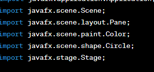
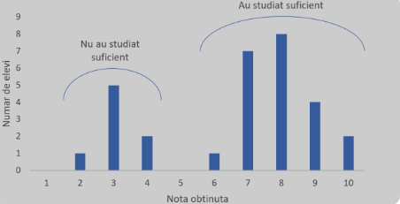

Capitolul 3: Vizualizarea cu Java - Explorarea capacităților grafice in Java - Crearea de vizualizări interactive - Prezentarea datelor statistice.
Acest capitol se concentrează asupra modului în care Java poate fi folosit pentru a crea vizualizări grafice interactive, oferind astfel o modalitate eficientă de prezentare a datelor statistice. Prin explorarea capacităților grafice ale limbajului de programare Java, vom intelege cum să generăm reprezentări vizuale ale datelor, facilitând înțelegerea și interpretarea acestora.
Explorarea Capacitatilor Grafice in Java
În prima parte a capitolului, vom explora bibliotecile grafice și capacitățile oferite de Java pentru crearea de elemente vizuale unde se folosesc bibliotecile:AWT(Abstract Window Toolkit) si Swing pentru gestionarea interfetelor grafice,dar si biblioteci mai avansate precum JavaFX.. Aceasta include manipularea formelor geometrice, gestionarea culorilor și alte aspecte grafice care stau la baza construirii vizualizărilor.
Ex:
În acest exemplu simplu, am creat o fereastră JavaFX care conține un cerc albastru. Atributele cercului, cum ar fi raza, centrul și culoarea, sunt gestionate în codul Java. Acesta este doar un început și JavaFX oferă multe alte funcționalități pentru crearea unor interfețe grafice mai complexe și vizualizări atractive.
Crearea de Vizualizări Interactive:
Un aspect crucial al acestui capitol este abordarea interactivă în crearea vizualizărilor. Vom explora modalități de interacțiune cu vizualizările, cum ar fi zoom-ul, filtrarea și evidențierea datelor, pentru a oferi utilizatorilor o experiență mai bogată și mai personalizată
* * * Zoom: permite utilizatorilor să exploreze detaliile vizualizărilor prin mărirea sau micșorarea anumitor porțiuni ale acestora.
Java oferă funcționalități pentru gestionarea evenimentelor de zoom.Se pot utiliza biblioteci sau framework-uri grafice precum JavaFX pentru a implementa această funcționalitate.
De exemplu, utilizatorul poate folosi gesturi de pinch pentru a realiza zoom într-o zonă a graficului.
* * * Filtrarea Datelor:Filtrarea permite utilizatorilor să selecteze și să vizualizeze doar anumite segmente ale datelor, în funcție de criterii prestabilite.Se pot adăuga controale interactive, cum ar fi casete de selecție sau meniuri derulante, pentru a permite utilizatorilor să filtreze datele în funcție de anumite condiții. JavaFX oferă componente pentru a gestiona interacțiunea utilizatorului.
* * * Evidentierea Datelor:Evidențierea constă în scoaterea în evidență a unor anumite elemente sau puncte de interes într-o vizualizare, facilitând identificarea și analiza acestora. JavaFX permite evidențierea prin schimbarea culorii, mărimii sau altor proprietăți ale elementelor selectate. De exemplu, când utilizatorul plasează cursorul peste un punct, acesta poate fi evidențiat pentru a evidenția informații suplimentare.
* * * Experienta personalizata:O experiență personalizată se referă la oferirea utilizatorilor posibilitatea de a configura vizualizarea în funcție de preferințele lor individuale, adăugand opțiuni personalizate, cum ar fi schimbarea tipului de grafic, a culorilor sau a altor aspecte ale vizualizării, pentru a satisface preferințele utilizatorului.
Prin îmbinarea acestor elemente, vom crea vizualizări care nu doar prezintă informații, ci și permit utilizatorilor să interacționeze activ cu datele, să exploreze detaliile și să obțină o înțelegere mai profundă a contextului. Aceste funcționalități îmbunătățesc semnificativ calitatea analizei datelor și permit utilizatorilor să descopere pattern-uri și tendințe în mod interactiv.
Prezentarea Datelor Statistice
Partea centrală a capitolului se concentrează pe prezentarea datelor statistice utilizând vizualizări grafice. Voi aborda modalități de reprezentare a diferitelor tipuri de date statistice, inclusiv tendințe centrale, distribuții și corelații.
Voi explora grafice precum histogramele, diagramele de dispersie și alte forme de vizualizare relevante pentru datele statistice. Prin sfârșitul acestui capitol, se poate avea o înțelegere solidă a modului în care Java poate fi folosit pentru a crea vizualizări interactive și captivante, care să faciliteze comunicarea eficientă a informațiilor statistice. Aceasta va oferi o perspectivă practică asupra aplicării conceptelor teoretice într-un mediu de programare specific.
* * * Tendinte : Pentru a ilustra tendințele centrale, se utilizeza grafice precum histograma sau diagrama cu bare pentru reprezentarea frecvențelor și distribuția datelor. Graficele cu linii pot fi folosite pentru a evidenția tendințe temporale sau evoluții.Ex: histograma ar putea evidenția distribuția frecvențelor ale unui set de date, iar o linie verticală arată media sau mediana.
* * * Distributii: Histograma este un instrument puternic pentru reprezentarea distribuțiilor statistice, evidențiind modul în care valorile sunt distribuite într-un interval. Diagrama cu cutii (box plot) poate oferi o perspectivă asupra dispersiei datelor. O histogramă ar putea ilustra cum se distribuie înălțimile într-un grup de persoane, iar un box plot ar arăta mediană, cuartile și posibilele valori extreme.
HISTOGRAMA-Statistica
* * * Corelatii: Diagrama de dispersie este o modalitate eficientă de a evidenția corelațiile dintre două variabile. Putem utiliza diverse culori sau dimensiuni ale punctelor pentru
a ilustra intensitatea corelației.Ex de diagramă de dispersie care arăta relația între datele calendaristice și precipitatiile .
* * * Reprezentarea Multidimensionala:Pentru a reprezenta date în spații multidimensionale,se utiliza grafice radar, hărți de căldură sau grafice tridimensionale.
O hartă de căldură ar putea evidenția zonele de interes într-un set de date multidimensional.
* * * Analiza Temporala: Pentru date temporale, graficele cu linii sau diagramele cu bare temporale sunt potrivite pentru evidențierea schimbărilor în timp.
Un grafic cu linii ar putea arăta evoluția vânzărilor unei companii pe parcursul mai multor luni sau ani.